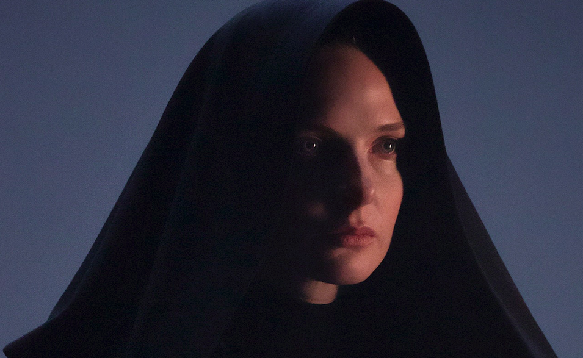

HOUSE ATREIDES
Lady Jessica Atreides
A Mother’s Hope.
Lady Jessica shares the burden of House Atreides’ leadership with her beloved Duke Leto and an unbreakable bond to their son Paul Atreides. As a member of the mysterious Sisterhood known as the Bene Gesserit, she is a master of body and mind, able to weaponize her words through a power known as ‘the Voice’ to bend the will of those who dare to threaten her family. Burdened by the knowledge of what Paul must become to survive his destiny, she must prepare her son to lead humanity into a better future.
